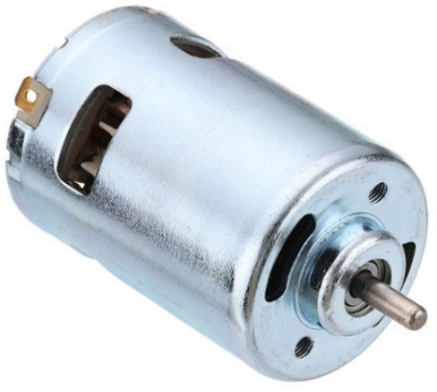
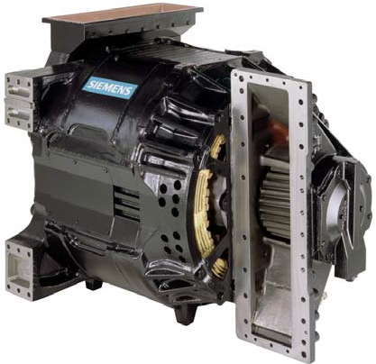
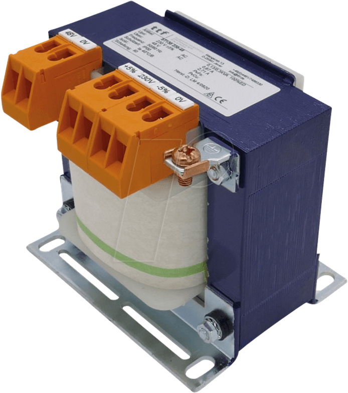
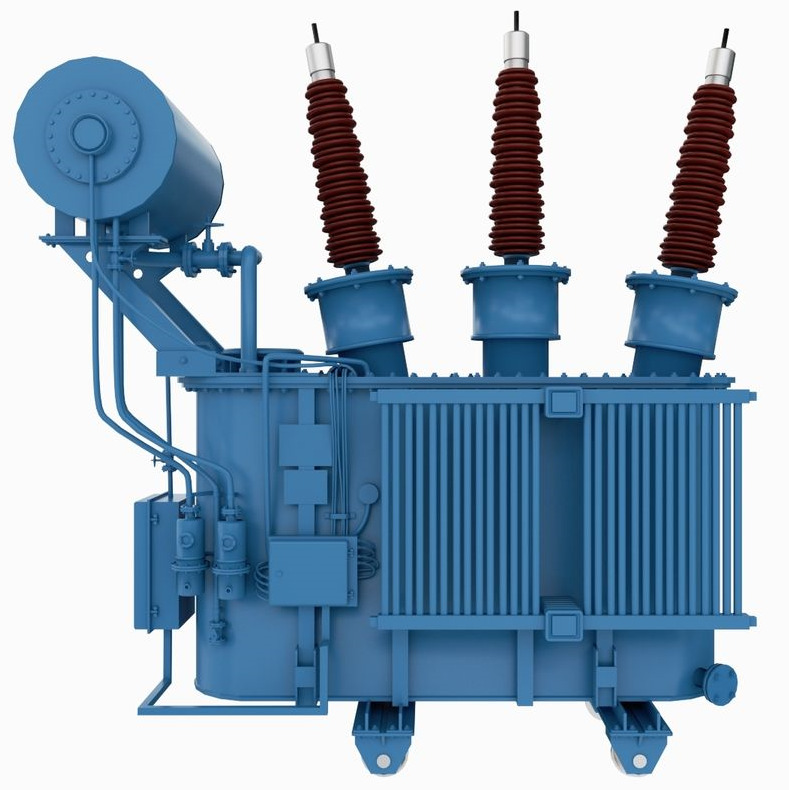
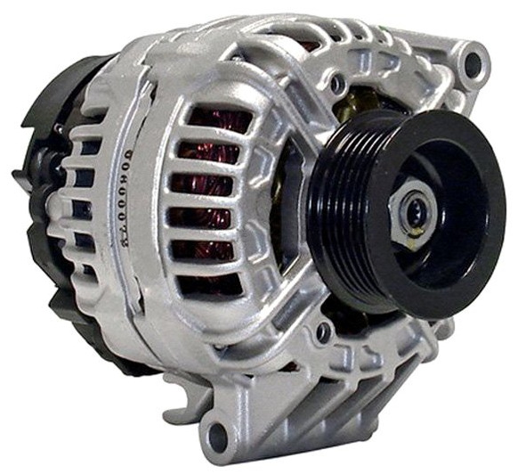
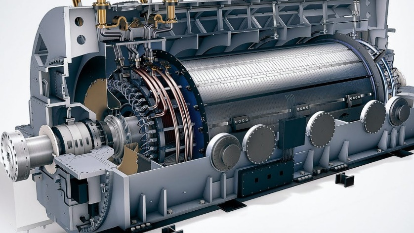

Temelji električnih strojev
Tematika električnih strojev je ena izmed temeljnih na področju Močnostne elektrotehnike. Električni stroji so osnovni gradniki in izvršni členi v mehatronskih sistemih, elektromotorskih pogonih, avtomatiziranih proizvodnih linijah, transportnih napravah, obdelovalnih strojih...
Z njimi izvajamo pretvorbo električne energije v mehansko in obratno, zato je za električne stroje uveljavljen tudi izraz elektromehanski pretvorniki. Glede na vrsto in smer pretvorbe energije jih delimo na:
Transformatorji
Statične naprave, ki električno energijo pretvarjajo v električno energijo drugačnih parametrov (npr. sprememba napetosti in toka, ob ohranitvi frekvence).
Kjer \(W_{el1}\) predstavlja električno energijo na primarni strani, \(W_{el2}\) pa električno energijo na sekundarni strani z drugačnimi parametri (drugačna napetost, drugačen tok).
Električni motorji (Rotacijski stroji)
Pretvarjajo električno energijo v mehansko delo.
Kjer \(W_{el}\) predstavlja dovedeno električno energijo, \(W_{meh}\) pa oddano mehansko energijo (npr. vrtenje osi).
Električni generatorji (Rotacijski stroji)
Pretvarjajo mehansko energijo v električno energijo.
Kjer \(W_{meh}\) predstavlja dovedeno mehansko energijo (npr. pogon z vodno ali vetrno turbino), \(W_{el}\) pa proizvedeno električno energijo.
Razpon moči in posledično velikost električnih strojev je izredno velik – od nekaj mW (miliwattov) do več 100 MW (megawattov), največji sinhronski generatorji presegajo tudi GW (gigawatt) območje moči. Nekaj tipičnih električnih strojev v vsakdanji praksi prikazujejo naslednje slike:






Pretvorba energije poteka reverzibilno (v obe smeri): \(W_{el} \leftrightarrows W_{meh}\), kar pomeni, da isti rotacijski stroj lahko obratuje kot motor ali kot generator, odvisno od trenutnih razmer pretoka električne in mehanske energije. To je pomembna prednost električnih motorjev npr. pri pogonu električnih vozil, saj med zaviranjem motor preide v generatorski režim obratovanja in se iz presežne mehanske energije \(W_{meh}\) pretvorjena električna energija \(W_{el}\) shranjuje v baterijskem sistemu. To znatno podaljša doseg vožnje električnega vozila z enim polnjenjem akumulatorskih baterij in istočasno poveča izkoristek pretvorbe energije.
Druga pomembna prednost električnih motorjev pred motorji z notranjim zgorevanjem je bistveno višji izkoristek, ki pri električnih motorjih znaša od (80 ÷ 95) %, motorji z notranjim zgorevanjem pa pretvarjajo energijo s približno 35 % izkoristkom. Pri pretvorbi energije v električnih strojih vedno prihaja do izgub (\(P_{Cu}, P_{Fe}, P_{meh}\)), zato je izkoristek vedno \(< 1\), lahko pa je zelo blizu (npr. \(\eta_{trafo} \approx 0,995\)). Izgube povzročajo segrevanje, ki ga moramo nadzorovati, da ne poškodujemo izolacije ali trajnih magnetov.
Delitev električnih strojev
Električne stroje glede na princip delovanja, vrsto napajanja in izvedbo magnetnega vzbujanja delimo na:
- TRANSFORMATORJE (TR) in SINHRONSKE STROJE (SS) - izmenični stroji
- ASINHRONSKE STROJE (AS) - izmenični stroji
- ENOSMERNE STROJE (ES) - enosmerni stroji
Dva temeljna pojava elektromagnetnega polja v strojih
Pri delovanju električnih strojev ima ključno vlogo elektromagnetno polje in naslednja pojava:
- Inducirana napetost: V spremenljivem magnetnem polju se v zaključenih zankah (ovojih, tuljavah, navitjih) inducira napetost, ki požene električni tok. Spremembo dosežemo z izmeničnim vzbujanjem (transformatorska inducirana napetost) ali krajevnim premikom (rezalna inducirana napetost). Velja Faradayev in Lenzov zakon.
- Sila na vodnik: V magnetnem polju na vodnike, po katerih teče tok, feromagnetne materiale in trajne magnete deluje sila, ki jih skuša premakniti za ohranitev energijskega ravnotežja (Lenzovo pravilo). Rotor rotacijskega stroja je uležajen tako, da se pod vplivom sile premika.
Pregled obravnavanih skupin strojev
- Transformatorji: Enofazni (male moči, napajalniki) in trifazni (velike moči, distribucija električne energije).
- Sinhronski stroji: Generatorji (veliki stroji v HE in TE, proizvodnja električne energije) in motorji (servomotorji z visokim izkoristkom in gostoto moči).
- Asinhronski stroji: Motorji (male in srednje moči, najštevilčnejši industrijski motorji) in generatorji (vetrne, črpalne HE).
- Enosmerni stroji: V zadnjem obdobju izgubljajo primat z izmeničnimi stroji zaradi drsnega mehanskega kontakta (ščetke in komutator).
Kviz 00: Reverzibilnost strojev
Zaradi reverzibilnosti pretvorbe energije lahko isti rotacijski stroj deluje kot motor (pretvarja električno energijo v mehansko) ali kot nekaj drugega, če pretvarja mehansko energijo (npr. pri zaviranju vozila) nazaj v električno. Kako imenujemo tak način obratovanja stroja?